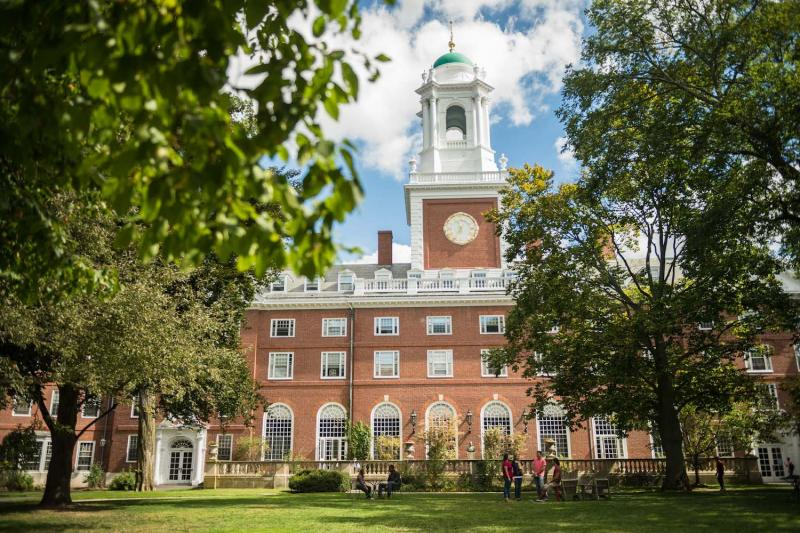

<!DOCTYPE html>
<html lang="en">
<head>
	<meta charset="UTF-8">
	<meta name="viewport" content="width=device-width, initial-scale=1.0">
	<title>universidad</title>
	<link rel="stylesheet" href="estilos6.css">
</head>
<body>
	
</body>
</html>
<body>

<section class="icono">
<div class="capa-gradient">
<div class="titulo2">	
<p> Vida Estudiantil </p>
</section>

<div class="conti">
	<center><h3><p><br> Desde sus profesores y asesores de la Cámara hasta sus amigos y compañeros de equipo
		<br>
	 Harvard es una comunidad vibrante donde puede sentirse apoyado y alentado. No importa de dónde vengas, Harvard es tu hogar.
<p><br>
<div class="conte-ad">

<div class="box">
	<br><br><br>


<div class="conti-2">
	<div class="titulo-uno">	
		<p>Vida Estudiantil en nuestro campus </p>
<hr>	
	<p>Vida Residencial
El sistema House crea una experiencia de universidad pequeña dentro de una importante universidad de investigación. Tu casa es donde comes, duermes y sientas las bases para amistades de por vida.
Actividades Estudiantiles
Una educación de Harvard es más que cursos. Se trata de discusiones nocturnas en el comedor con amigos, producciones teatrales, feroces (o amistosas) competencias atléticas, salidas a los museos de Boston y mucho más.

A través de actividades extracurriculares, conocerá gente nueva, perseguirá sus intereses (o descubrirá otros nuevos) y enriquecerá su comprensión del mundo y las personas que lo habitan.
<hr>
<p>
<br><br><br><br><br>

	<p> <h3><br>
	<div class="conti-2">
	<div class="titulo-dos">	
		<p>Actividades fisicas </p>
<hr>	
	Atletismo
Casi el 80 por ciento de los estudiantes de Harvard participan en atletismo, y todos se unen para animar a sus amigos y mostrar su orgullo Crimson.
<br><br>
Salud y Bienestar
Desde la salud física hasta el bienestar mental y emocional, su bienestar sigue siendo una prioridad fundamental. Puede encontrar todo lo que necesita para mantenerse saludable a través de los muchos servicios de salud, bienestar y acondicionamiento físico de Harvard.
	</p>
	<br>
	<hr>
<br><br><br><br>
	<div class="conte-ad">

<div class="box">
	<br><br><br>


<div class="conti-2">
	<div class="titulo-tress">	
		<p>Actividades de los Estudiantes</p>
<hr>	
	<br><br>Diversidad e inclusión
Harvard se compromete a crear un entorno de vida y aprendizaje inclusivo para todos los miembros de nuestra comunidad. Ofrecemos una variedad de recursos y oficinas para ayudar a que Harvard sea un lugar seguro y acogedor para los estudiantes de todos los orígenes.
<br><br>
<hr>
<br><br><br><br><br><br><br>
<div class="final">
	<center><p> Mira este Video para que tengas 
		<br><br>una mejor impresion sobre nuestro campus.
		<hr>
<br>
		<iframe width="700px" height="500px" src="https://www.youtube.com/embed/UPRWsTBA1bA" title="YouTube video player" frameborder="0" allow="accelerometer; autoplay; clipboard-write; encrypted-media; gyroscope; picture-in-picture; web-share" allowfullscreen></iframe>

		<br><br><br>


		
<section class="content contact">
        <h2 class="title"><br><br>Contacto</h2>

        <div class="footer-section">

            <div class="f-enlaces">
                <a href="index1.html">Inicio</a>
                <a href="index2.html">Sobre Nosotros</a>
                <a href="index3.html">Admiciones</a>
                <a href="index4.html">Financiamiento</a>
                <a href="index5.html">Oferta Academica</a>
                <a href="index6.html">Vida Estudiantil</a>
               
            </div>

            